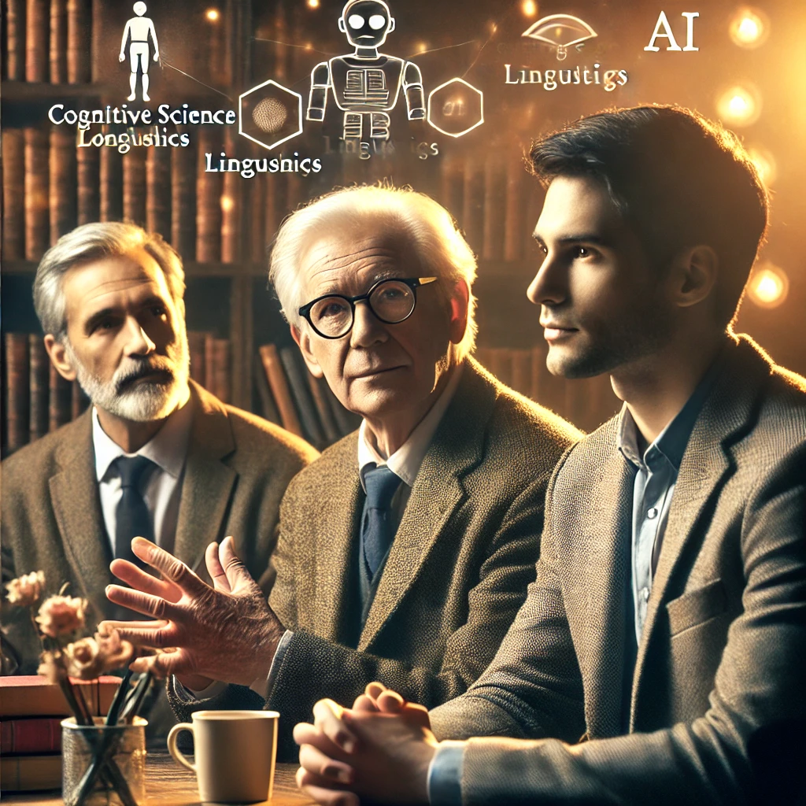

FLP - Language acquisition - Bruner, Chomsky and Deb Roy

Summary of class discussion
This transcript records a class discussion analyzing Deb Roy’s TED Talk, “The Birth of a Word,” which details a study using extensive home video recordings to model a child’s language acquisition. Participants discuss the study’s methodology, the child’s progression from babbling to using words like “water,” and the role of caregivers in simplifying language to facilitate learning. The conversation also explores broader implications for language acquisition theories, contrasting Roy’s findings with Chomsky’s, and considers the impact of context on language development. Finally, the class reflects on Jerome Bruner’s work on meaning-making and the social context of learning.
(generated from the transcript of zoom recording using notebook-lm)
How does contextual usage shape language acquisition in young children?
Contextual usage plays a crucial role in language acquisition for young children. The sources highlight several key aspects of this relationship:
- Active Participation: Children acquire language not as passive observers but through active engagement and use . Being exposed to language is less important than using it in meaningful contexts . This active participation includes learning how, where, to whom, and under what circumstances to use language .
- Pre-linguistic Understanding: Before mastering formal language, children develop an understanding of communicative functions and intentions . They learn to indicate, label, request, and even mislead . These pre-linguistic abilities motivate children to learn language to better fulfill these functions .
- Social Interaction: Language acquisition is very much a social interaction. It happens in the context of social settings, not in isolation .
- Joint Attention: Children develop the ability to focus with others on a shared referent . This joint attention and turn-taking are crucial for language development .
- Caregiver Influence: Caregivers play a vital role in a child’s language development. They adjust their speech to match the child’s level, simplifying their language when the child is learning a new word and gradually increasing complexity as the child’s skills improve. This creates a feedback loop where the child’s learning influences the caregiver’s language.
- Visual Context: The visual environment also influences language learning. Children’s movement and activities within a space are linked to the words they hear and learn. For example, the word “water” is often associated with the kitchen, where water is typically found. Similarly, the word “bye” is linked with doorways.
- Meaning over Mechanics: Children focus on the meaning of language rather than just the mechanics of it, like syntax and grammar. The sources suggest that children understand the intention to communicate even before they have the words to express themselves . They are sensitive to context even before they can speak, paying attention to eye contact, tone, and gesture .
- Learning through Doing: Language is acquired through use, not through mere exposure, observation, or imitation . It’s not just about what to say, but how, where, to whom and under what circumstances it should be said . The act of using language helps children understand not only the lexicon but also the grammar .
In summary, children learn language through active participation, social interaction, and a focus on meaning within specific contexts, both visually and through social exchange. This contrasts with theories that focus solely on innate language structures or passive learning .
(generated from the transcript of zoom recording using notebooklm)
Bruner’s perspective on Language acquisition
Jerome Bruner’s perspective on language acquisition is that it is a dynamic and interactive process deeply rooted in social and contextual experiences, contrasting with more structural views of language acquisition. Key aspects of Bruner’s view include:
- Language as a Tool for Action: Bruner posits that language acquisition is not merely about learning vocabulary or grammar but about learning how to “do things with words”. Children learn language through active use and participation, not as passive spectators. This involves understanding how, where, to whom, and under what circumstances to use language.
- Meaning-Making over Syntax: Bruner emphasizes the primacy of meaning and function over syntax. He argues that children are driven to learn language to express their intentions, such as indicating, labelling, requesting and even misleading. This contrasts with theories that focus solely on grammatical structures and rules.
- Social and Cultural Context: Bruner stresses that language is acquired within a social context, not in isolation. Children are deeply influenced by their environment and interactions.
- Caregiver Support: Caregivers play a crucial role by adjusting their language complexity to support a child’s learning. This involves simplifying language when a child is learning new words and gradually increasing complexity as the child progresses.
- Joint Attention and Turn-taking: Bruner highlights the importance of joint attention, where children and caregivers focus on a shared object or event. Turn-taking and mutual exchange are essential communicative skills that develop even before the use of formal language.
- Innate Readiness for Meaning: Bruner suggests that children are born with an innate readiness for meaning, a curiosity and a sensitivity to context. This contrasts with Chomsky’s idea of a language acquisition device focused on syntax. Instead of innate linguistic structures, Bruner suggests an innate potential for curiosity, alertness, and sensitivity to the social world.
- Context Sensitivity: Bruner emphasizes that language acquisition is context-sensitive. Children learn language better when they understand the significance of the context and the situation where language is being used.
In summary, Bruner views language acquisition as an active, socially embedded, and meaning-driven process. He suggests that children learn through using language in a variety of meaningful contexts, supported by caregivers, their environment and their innate readiness for understanding and engaging with the world. This contrasts with theories that focus solely on innate linguistic structures or passive learning.
(generated from the transcript of zoom recording using notebooklm)
What is Bruner’s concept of “Acts of Meaning”?
Bruner’s concept of “Acts of Meaning” revolves around the idea that humans actively construct meaning through their engagement with the world, rather than passively receiving it. This concept is central to his perspective on language acquisition and cognition, and it highlights the dynamic, situated, and purposeful nature of human understanding.
Here are the main components of Bruner’s concept of “Acts of Meaning,” as detailed in the sources:
- Active Participation: Meaning is not something that is simply given, but something that individuals actively create through their actions and interactions with their environment. Children, for example, acquire language through use rather than simply being exposed to it. This active involvement is essential for making sense of the world.
- Intentionality and Purpose: Acts of meaning are driven by human intentions and purposes. Children, for instance, learn language to fulfill their communicative intentions, such as indicating, labeling, requesting, and even misleading. This suggests that meaning-making is goal-oriented, with the purpose of connecting to others and the world.
- Context Sensitivity: Meaning is always situated within a specific context. The significance of situations and the contexts of communication is crucial for understanding both language and the world. Children develop their language skills more effectively when they are aware of the context. This includes social, cultural, and physical settings.
- Narrative as a Mode of Thought: Bruner posits that thinking itself is fundamentally narrative, with the human brain making sense of the world through stories. This implies that understanding and meaning are constructed through a narrative framework, rather than through abstract or logical reasoning.
- Social Interaction: Meaning-making is inherently a social process, emerging from interactions between individuals. Language does not develop in a vacuum but within a social space. The active exchange of ideas, and not just observation, is essential. Children’s engagement with others, such as caregivers, shapes their understanding of language and the world.
- Joint Attention and Turn-taking: These social interactions include the ability to focus with others on a shared experience (joint attention) and the understanding that there are patterns to communication, such as turn-taking.
- Rejection of Passive Reception: Bruner rejects the idea that meaning is passively received. He opposes theories that propose language is acquired through rote memorization or by an innate language acquisition device, such as Chomsky’s model. He argues that language and meaning are actively constructed through dynamic engagement with the world.
- Prior Knowledge: The ability to grasp the significance of a situation and to make sense of it linguistically depends on a child’s pre-linguistic understanding and their ability to interpret signs and symbols. Children have pre-existing frameworks (or ‘proto-linguistic’ readiness) to understand the world before they start learning formal language.
In summary, Bruner’s concept of “Acts of Meaning” highlights the active, intentional, contextual, social, and narrative nature of human understanding. It proposes that meaning is created through individuals’ engagement with the world and their interactions with others. This contrasts with approaches that suggest that meaning is passively received, or that language acquisition is solely dependent on innate linguistic structures. For Bruner, meaning is a dynamic accomplishment, not a static entity.
Deb Roy’s research
Deb Roy’s research involved a unique approach to studying language acquisition by closely documenting his own child’s language development. This was done through a comprehensive home video recording system. Here’s a breakdown of the procedure and some key findings:
Procedure:
- Extensive Data Collection: Roy set up multiple cameras and sound recording devices throughout his home. This system captured his baby’s environment over two years, creating a vast dataset. This resulted in 90,000 hours of video.
- Data Analysis: The massive amount of video data was converted into a usable form using motion analysis. The movements of family members were tracked through “space-time worms” which allowed the researchers to identify areas of activity in the home.
- Speech Transcription: With machine assistance, over seven million words from the home environment were transcribed. This included all speech heard by the child from his parents and nanny.
- Word Mapping: The researchers mapped when and how the child learned each word. They identified 503 words the child learned to produce by his second birthday, noting that he was an early talker.
- Visual Context Analysis: The team also analysed the visual context of where and when the child heard specific words, creating what they called “wordscapes.” For example, the word “water” was mapped to the kitchen and “bye” was mapped to the entrance of the house. They used fisheye lens cameras to create a “dollhouse cutaway” view of their home and tracked movements using video analytics.
Results and Findings:
- Caregiver Speech Simplification: The study found that caregiver speech became simpler (shorter utterances) just before the child learned a new word, and then the complexity increased after the word was acquired. This suggests that caregivers unconsciously adjust their language to support a child’s learning.
- Wordscapes: Roy’s team created “wordscapes” that visually mapped the spatial context in which words were used. This showed the locations that were strongly linked to the use of certain words. For instance, the word “water” was strongly linked to the kitchen.
- Gaga to Water: Roy’s research tracked the development of his son’s first words. The child first said “gaga” and then eventually “water.” The shift from “gaga” to “water” was not linear, with the child sometimes reverting back to “gaga”. This suggests that children often practice language, rather than learn it in a linear way. The transition from “gaga” to “water” also highlights the physiological development of vocal muscles, where sounds start off simple before becoming more complex.
- Influence of Social Environments: Roy’s research aimed to understand the impact of social environments on language acquisition. The data revealed how the child’s interactions, and locations within the home influenced his word learning. The study identified “social hotspots”, or areas of interaction in the home, and “solo hotspots”, suggesting that these types of activity also affect how language is learned.
- Focus on Function: The study highlights how children learn to use language for specific purposes, like requesting, rather than just learning the words themselves. This aligns with Bruner’s ideas about “doing things with words”.
- Meaning over Mechanics: Roy’s research provides evidence that language acquisition is about more than the mechanics of language, such as syntax. The data suggests that children relate meaning to words, and understand the context in which words are used.
Additional points:
- The study was conducted in the 2010s, and involved collecting and analysing 200 TB of data.
- Elements of the data were made available to a trusted research team at MIT.
- The study led to further research, with PhD students building on Roy’s work to examine how language develops when children start preschool.
Roy’s research, therefore, provides a detailed, data-driven perspective on how language is acquired in the context of a child’s everyday life. It supports the idea that language learning is an active process that is influenced by social interactions, visual context, and caregiver input.
(generated from the transcript of zoom recording using notebooklm)
Bruner Vs Chomsky on Language acquisition
The theories of language acquisition proposed by Noam Chomsky and Jerome Bruner represent two distinct approaches in understanding how children learn language. Here are the key differences between their theories:
- Innateness vs. Constructivism
- Chomsky’s Theory: Chomsky is known for his innateness hypothesis, which posits that humans are born with an inherent ability to learn language, encapsulated in the concept of Universal Grammar. He argues that this innate capacity allows children to acquire language rapidly and efficiently, regardless of their linguistic environment.
- Bruner’s Theory: In contrast, Bruner’s approach is rooted in constructivism, emphasizing that language acquisition is a process through which children actively construct their understanding of the world. He believes that language develops through social interaction and cultural context, rather than being solely a product of innate biological mechanisms.
- Role of Interaction
- Chomsky’s Focus: Chomsky’s theories place less emphasis on social interaction, suggesting that the innate capacity for language is primary. He believes that children can develop linguistic competence largely independently of their social environment.
- Bruner’s Emphasis: Bruner highlights the importance of interaction, proposing the Language Acquisition Support System (LASS), which describes how caregivers provide support and guidance in language learning. He argues that social interactions are crucial for children to develop their linguistic skills effectively.
- Nature vs. Nurture
- Chomsky’s Position: Chomsky leans towards the “nature” side of the debate, asserting that language abilities are hardwired in the human brain. He emphasizes the biological predisposition for language acquisition and suggests a critical period during which language learning is most effective.
- Bruner’s Position: Bruner emphasizes “nurture,” focusing on how environmental factors and social contexts influence language development. He believes that children’s experiences with language in their surroundings shape their linguistic abilities.
- Focus on Syntax vs. Narratives
- Chomsky’s Emphasis on Syntax: Chomsky primarily focuses on syntax and the structural aspects of language, analyzing how sentences are generated from underlying grammatical rules. His work often examines linguistic competence rather than performance in real-world contexts.
- Bruner’s Focus on Narratives: Bruner argues that storytelling and narrative structures are fundamental to human cognition and communication. He believes that narratives help children organize experiences and understand their world, making them essential for cognitive development.
Summary In summary, Chomsky’s theory emphasizes innate biological mechanisms and universal principles governing language structure, while Bruner’s theory focuses on social interaction, cultural context, and the active role of learners in constructing meaning through narrative. Both theories contribute significantly to our understanding of language acquisition but reflect fundamentally different emphases on nature versus nurture and the processes involved in learning language.
(Perplexity generated)
Examples of Entry into Meaning from life
Bruner’s concept of “entry into meaning” can be observed in various practical examples in everyday life, illustrating how individuals, particularly children, engage with and construct meaning through cultural narratives and social interactions. Here are some key examples:
1. Storytelling in Family Settings
Families often share stories during meals or gatherings, where parents recount their childhood experiences or family history. This practice helps children understand their place within the family narrative, shaping their identities and values. For instance, a child may learn about resilience through a parent’s story of overcoming challenges, which provides a framework for understanding their own experiences.
2. Role-Playing Games
In educational settings or playgroups, children often engage in role-playing activities where they enact various scenarios (e.g., playing house, pretending to be doctors). These activities allow them to explore different roles and perspectives, helping them to understand social norms and expectations. Through these narratives, children learn about cooperation, empathy, and the consequences of actions within a safe environment.
3. Cultural Celebrations
Participating in cultural or religious celebrations (like Diwali, Christmas, or Thanksgiving) offers children a rich context for understanding shared meanings and traditions. These events are often accompanied by stories that explain their significance, allowing children to connect personal experiences with broader cultural narratives. For example, during Diwali, children learn about the victory of light over darkness through stories of Lord Rama.
4. Literature and Media Consumption
When children read books or watch films, they are exposed to various narratives that help them make sense of complex emotions and situations. For instance, reading a story about friendship can teach them about loyalty and conflict resolution. The narratives they consume become tools for interpreting their own relationships and experiences.
5. Educational Practices
In classrooms, teachers often use storytelling as a pedagogical tool to convey lessons across subjects. By framing lessons within narratives (e.g., historical events told as stories), students can better grasp abstract concepts and relate them to real-life situations. This narrative approach enhances engagement and retention of information.
6. Peer Interactions
Children learn a great deal from interactions with peers, where they negotiate meanings through play and conversation. For example, when children argue over rules in a game, they engage in a narrative process that helps them understand fairness and cooperation. These interactions are foundational for developing social skills and understanding group dynamics.
Conclusion
Bruner’s concept of “entry into meaning” emphasizes the importance of narrative in shaping human understanding and identity formation. Through storytelling, cultural practices, role-playing, and educational methods, individuals construct meanings that are integral to their personal and social development. These examples illustrate how meaning is not merely learned but actively constructed through engagement with cultural narratives and social contexts.
Answer from Perplexity: pplx.ai/share